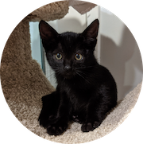
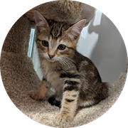
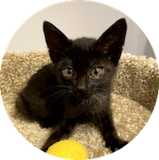

<script async src="https://www.googletagmanager.com/gtag/js?id=G-EFGGZ0CZBZ"></script>
<script>
  window.dataLayer = window.dataLayer || [];
  function gtag(){dataLayer.push(arguments);}
  gtag('js', new Date());

  gtag('config', 'G-EFGGZ0CZBZ');
</script>

<section id="main" class="wrapper style1">

  <div class="container">


  	<h3>Have cats or kittens in your yard?</h3>
		<div id="donations">
  	<p><b>If you feed them, you must fix them!</b> Cats multiply very quickly, and two cats can be 50 or more in a year. <a href="https://www.alleycat.org/our-work/trap-neuter-return/">Trap-neuter-return</a> (TNR) is the only way to control feral cat populations. Start by following the <a href="resources">Getting Started</a> steps. We provide advice and resources for TNR for feral cats in the Santa Clara County.

  	</p>
  	</div>

  	<hr class="major" />

		<div class="row">
			<div class="4u">
				<section class="special box">
					<a href="resources" style="text-decoration:none;color:inherit;">
						<i class="fa" style="height:15px"></i>
						<h4>Resources</h4>
					</a>
					<p>Check out the <a href="resources">Resources</a> page for TNR resources and trap rentals.</p>
				</section>
			</div>
			<div class="4u">
				<section class="special box">
					<a href="trapping" style="text-decoration:none;color:inherit;">
						<i class="fa" style="height:15px"></i>
						<h4>Trapping</h4>
					</a>
					<p>For guidance and tips on trapping, go to the <a href="trapping">Trapping</a> page.</p>
				</section>
			</div>
			
			<div class="4u">
				<section class="special box">
					<a href="success-stories" style="text-decoration:none;color:inherit;">
						<i class="fa" style="height: 15px"></i>
						<h4>Get Help</h4>
					</a>
					<p>Submit a request for help in Santa Clara County on <a href="tnr">bayareacats.org/tnr</a>.</p>
				</section>
			</div>
		</div>

		<hr class="major" />

		<h3>Donations</h3>
		<div id="donations">
  	<p>Our community cats and kittens could use your help. If you would like to get involved in trap-neuter-return (TNR) or fostering cats or kittens, please reach out. Donations of trap bait (wet or dry cat food or tuna), puppy pee pads, or other cat supplies are gladly accepted. You can also donate via <a target="_blank" href="https://www.paypal.com/donate/?hosted_button_id=85C7UMCXTS2GC">PayPal</a> or <a href="https://venmo.com/code?user_id=3668070472091276232">Venmo</a>, and through our <a href="https://www.chewy.com/g/bay-area-cats_b103747788?utm_medium=email&utm_source=transactional&utm_campaign=SHELTER_BUSINESS_PAGE_APPROVED#wish-list">Chewy</a> or <a href="https://a.co/4CxxGb9">Amazon Wishlist</a>. Contact us at <a href="mailto:info@bayareacats.org">info@bayareacats.org</a> with any questions or if you want to get involved. Bay Area Cats is a 501(c)(3) non-profit organization.
  	</p>
  	</div>
	</div>
</section>

				
			
		
